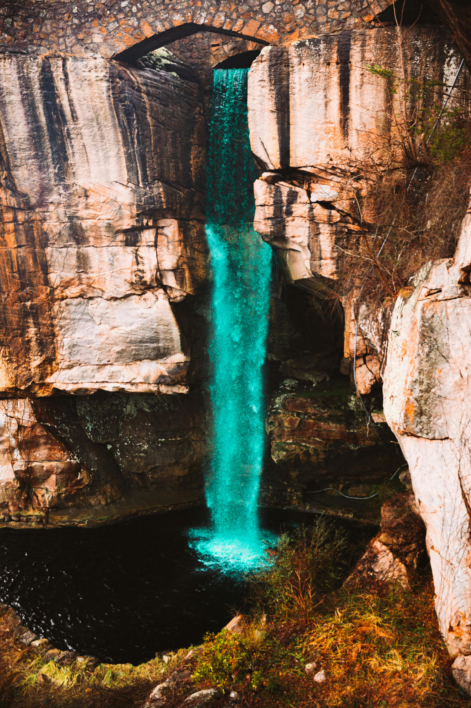
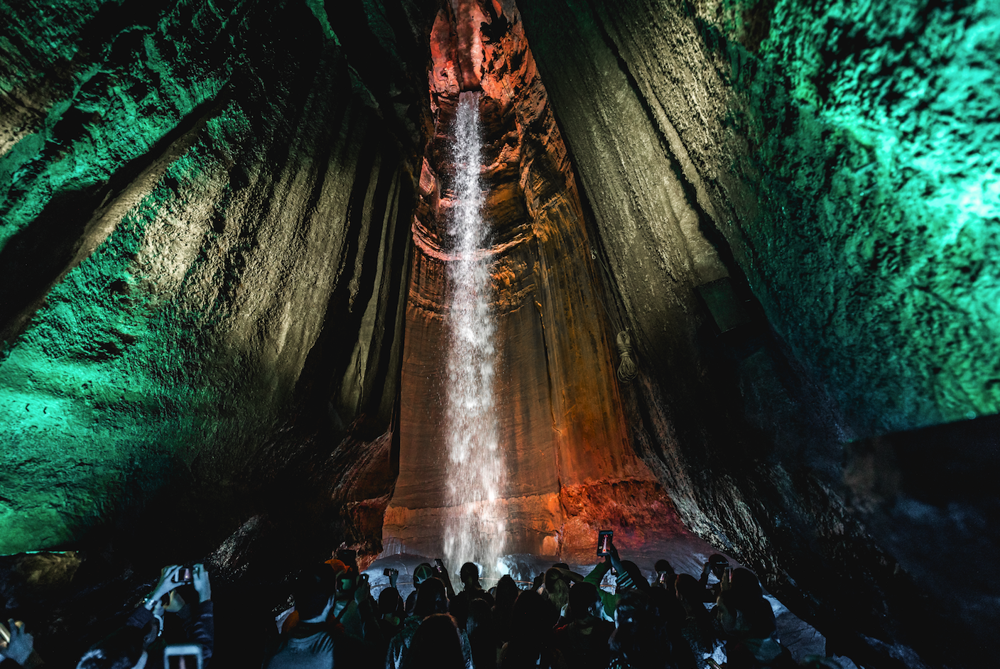
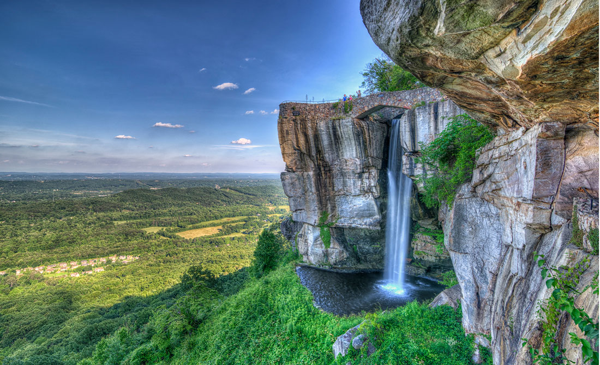
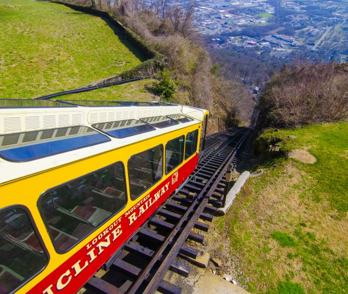
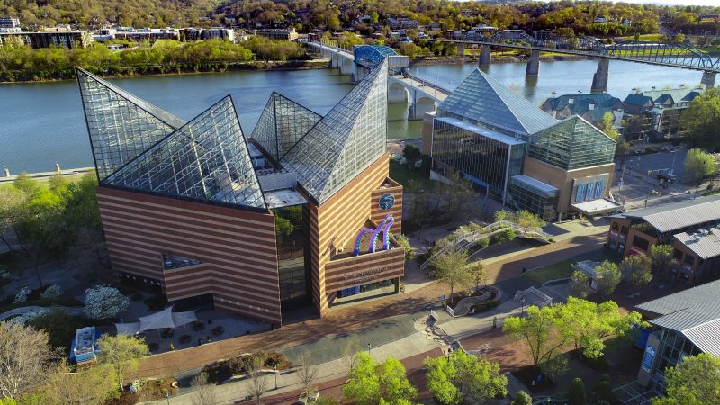
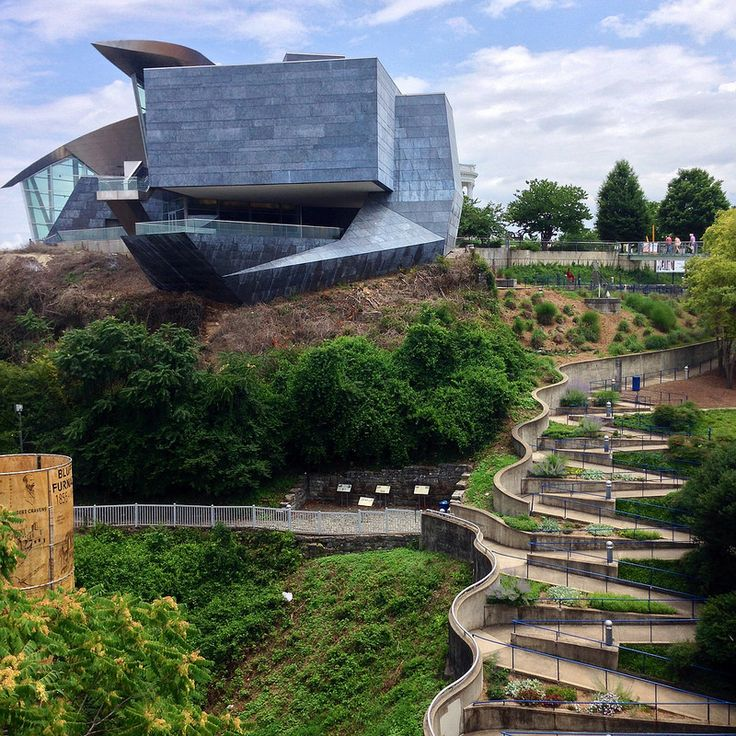

Chattanooga is loaded with must see locations and attractions. Waterfalls, Mountains, Aquariums, and Art Galleries. There is something for everyone.

Ruby Falls
Ruby Falls was discovered in 1928 by Leo Lambert and was later opened to the public in 1929. It has been a natural wonder for nearly a century. Located 1,120 ft below the mountain's
surface, a beautiful waterfall sleeps in the dark.

Rock City
Rock City was established in 1932, featuring views of seven states at once, this well known landmark orginally got off to a slow start as advrtising was difficult in the 20's
Eventually this lead to the Iconic SEE ROCK CITY birdhouses, barns, and roadside signs that are dotted all over the south.

Inclined Railway
Opened in 1895 the Inclined Railway has been transporting customers for over a century. This unique train rides up a eye watering 72.7% angle on the side of lookout
mountain. Orginally steam powered this wonder now uses two 100 horepower electric motors to safely move the trains.

TN Aquarium
Opened in 1992 the TN Aquarium has been wowing its customers for over 30 years. Featuring the River Journey and The Ocean Journey, come experince to very different biomes and get up
close and personal with everything from Stergen to Sharks, you can even pet a stringray!

Hunter Art Museum
Opened in 1952 the Hunter Art Museum has been an iconic landmark in chattanooga for decades. Housing fine art, statues, and other fine works it is definely worth a visit. They even occassionally
have dancing on their cantalevered patio overhanging river.
